1
Vytočení na kruhu
Na kruhu se z hroudy hlíny vytáhne první tvar. Někdy sedne hned, někdy se sveze, zkroutí nebo skončí zpátky v kýblu.
Keramika
Každý trochu jiný. Vznikají pomalu, po večerech, mezi běžnými dny. Na kávu, čaj nebo třeba snídani.
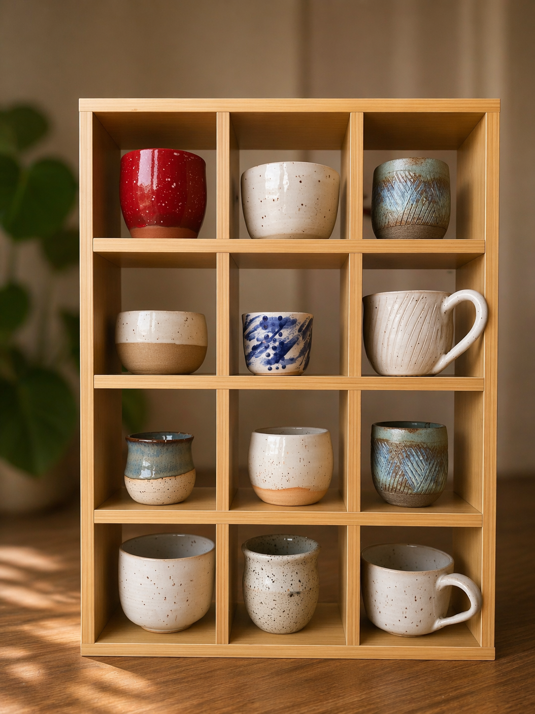
Kusovky
Nevyrábím sety. Výjimečně vznikne pár nebo několik věcí v podobném stylu, ale většinou jde o samostatné kalíšky, šálky, hrnky a misky. Některé zůstanou doma, jiné putují dál.
Další fotky najdeš posunutím do strany.
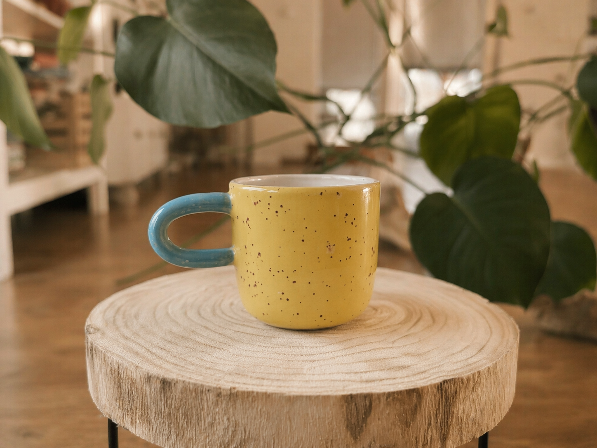
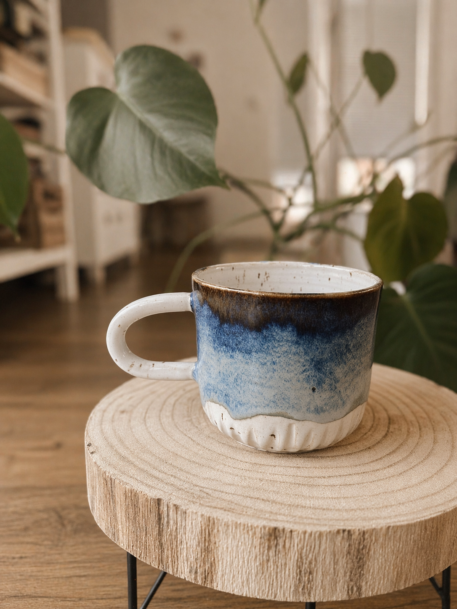
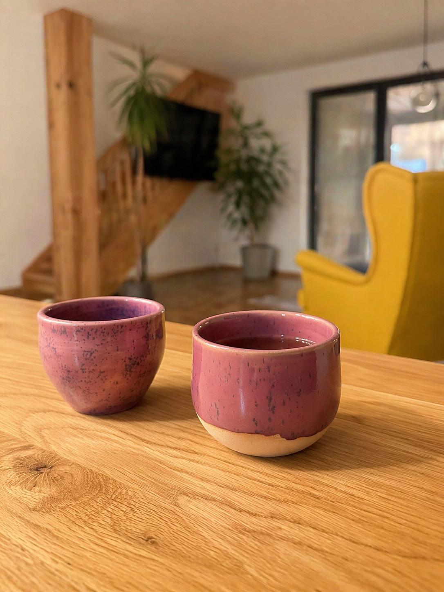
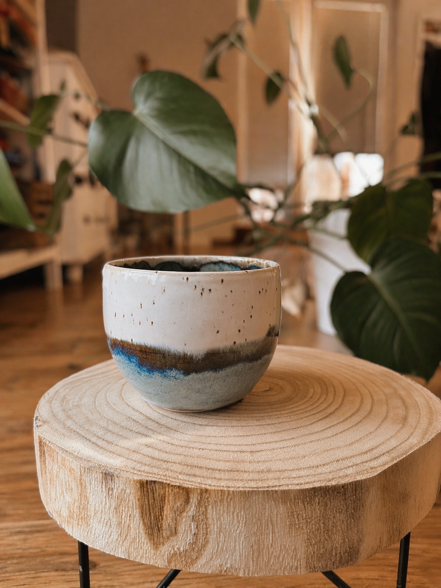

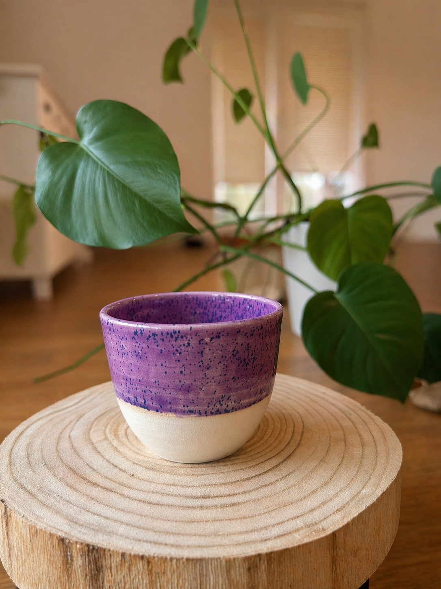
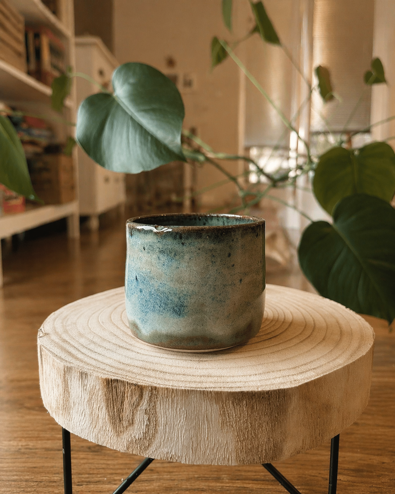
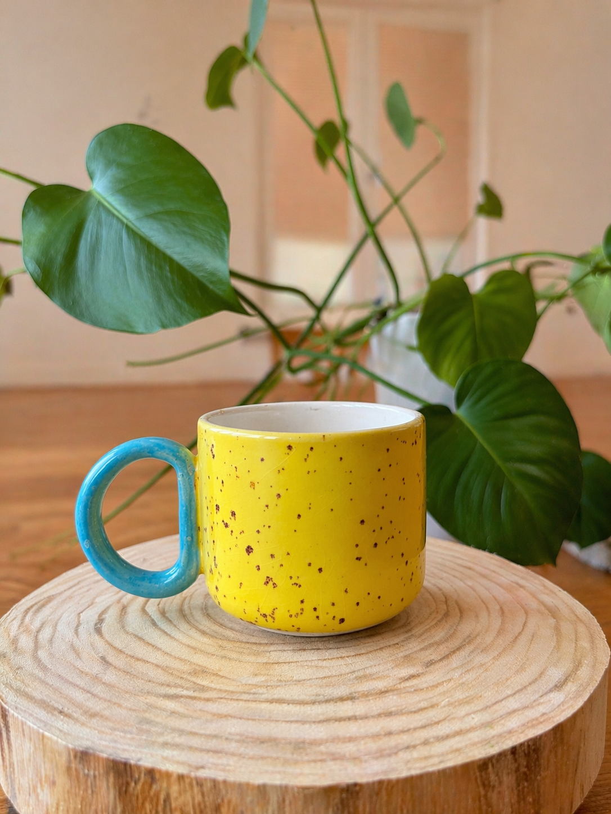
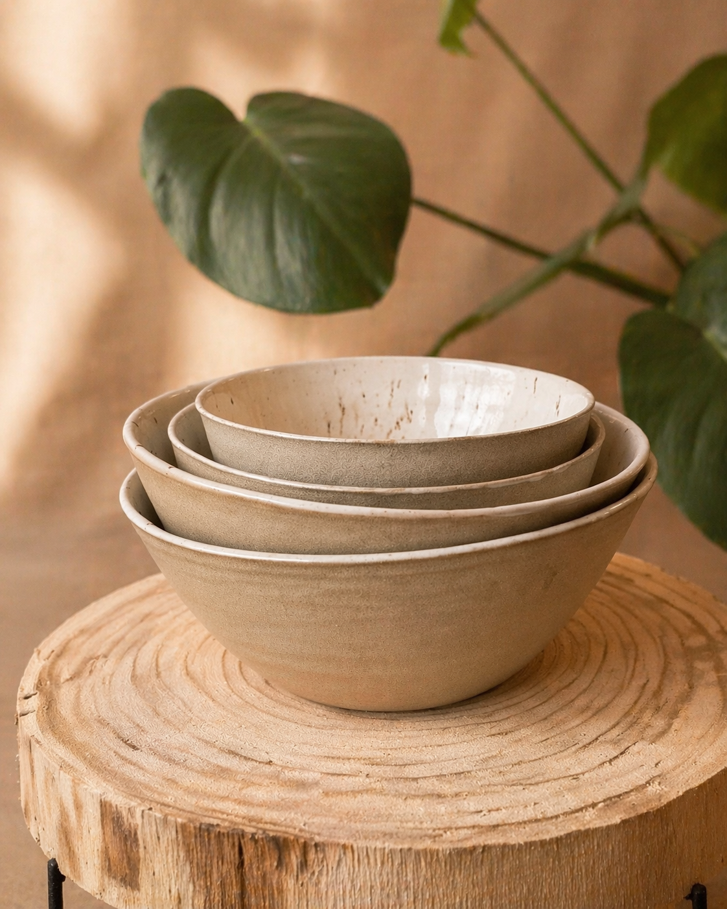
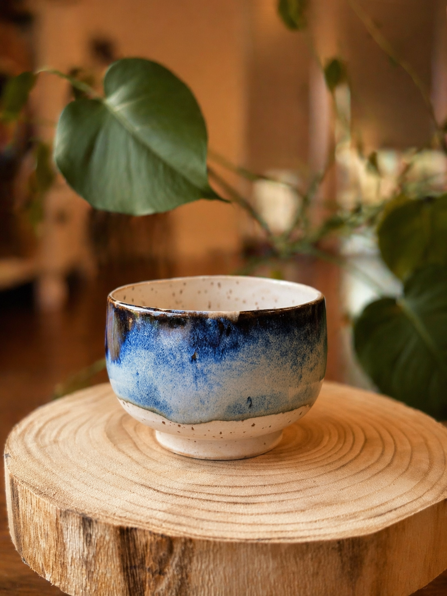
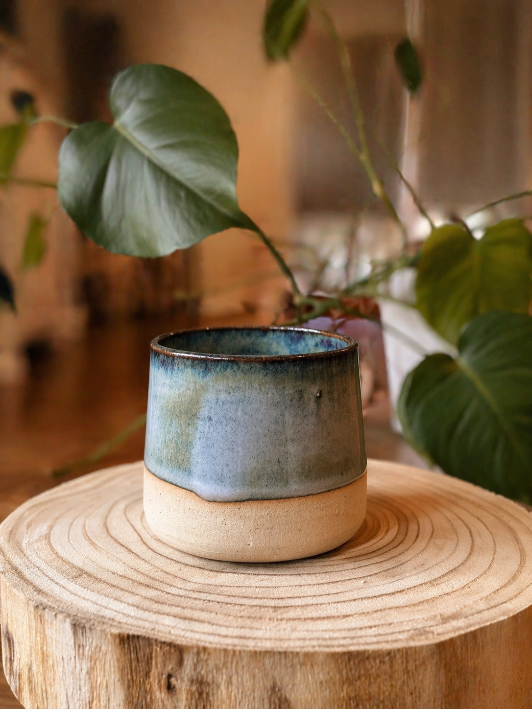
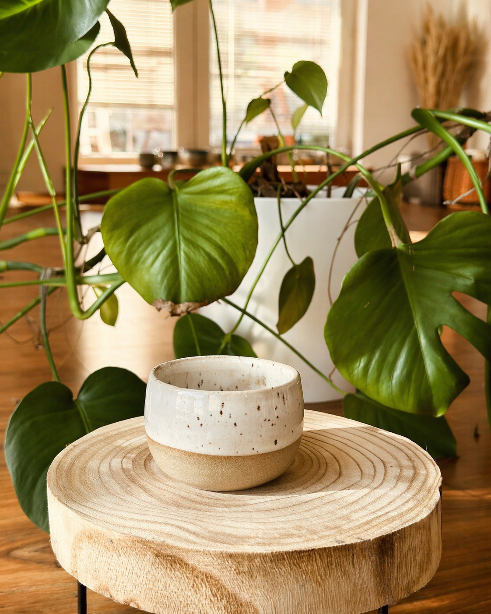
Líbí se ti některý kousek?
Napsat na InstagramRuční výroba
Mezi kusem hlíny a hotovou keramikou je dost čekání, opravování a momentů, kdy se člověk radši moc neraduje dopředu. Každý kousek musí projít rukama několikrát, než se z něj dá normálně pít nebo jíst. V mém světě to momentálně znamená zhruba dva měsíce od vytočení k hotovému výrobku.
Na kruhu se z hroudy hlíny vytáhne první tvar. Někdy sedne hned, někdy se sveze, zkroutí nebo skončí zpátky v kýblu.
Když hlína zavadne tak akorát, vracím kus na kruh. Obtáčím dno, ztenčuju stěny a dávám mu finální linku.
Pak se nespěchá. Keramika musí proschnout skrz naskrz, jinak by v peci mohla prasknout ještě dřív, než se ukáže, co z ní bude.
Přežah je první výpal. Kus už není syrová hlína, dá se vzít do ruky bez strachu, ale pořád ho čeká glazura a druhý výpal.
Na přežahlý střep přijde glazura vhodná pro kontakt s jídlem, aby se z něj dalo normálně jíst a pít. U glazur je vždycky trochu napětí, protože pec si výsledek často rozhodne po svém.
Většinu věcí pálím ostře na 1200 stupňů ve spřátelených dílnách v Liberci. Teprve po vychladnutí pece je jasné, co se opravdu povedlo.
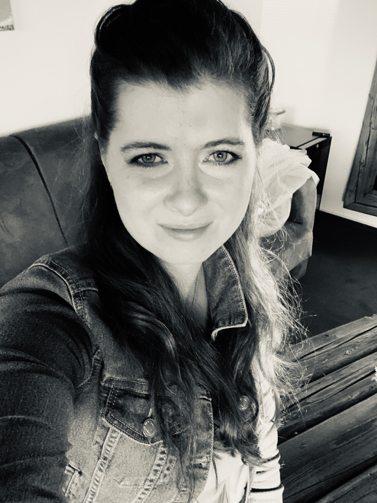
O mně
Přes den pracuju jako HR a k hlíně si sedám ve volných chvílích, když se zrovna nevěnuji rodině nebo nelítám kolem domácnosti. Času je málo a pořád se učím. Byla jsem na několika kurzech a těším se na další.
Volné chvíle Tvořím po večerech a kdykoliv se najde chvilka. Někdy vznikne víc věcí, někdy skoro nic.
Doma a po svém Nemám vysněnou insta dílnu. Jen hlínu, ruce, stůl a běžný domácí provoz okolo.
Radši u kruhu Volný čas nechci správou e-shopu. Radši ho věnuju točení, glazování a dalším pokusům.
Mám sen O vlastní peci a dílně, kde budu tvořit bez omezení. Zatím se učím, zkouším a pomalu si hledám vlastní rukopis.
Pojď to taky zkusit!
Není to velký kurz ani keramická škola. Spíš klidné setkání u hlíny, kde si můžeš osahat kruh, centrování a první tvar bez tlaku na výkon.
Ukážu ti úplné základy práce s hlínou na kruhu
Zkusíš si centrování, první tvar a práci rukama
Bez tlaku na výsledek, spíš jako první ochutnání řemesla
Termín domluvíme podle toho, kdy to bude dávat smysl
Pro normální dny
Největší radost mám, když se z hrnku pije káva a v misce je snídaně. Keramika má být součástí normálního dne, klidně může i do myčky.
Kontakt
Většina kousků zatím putuje mezi rodinu a přátele. Jenže doma už nám poličky pomalu praskají ve švech, takže jestli se ti líbí nějaký kus nebo styl, ozvi se mi přes Instagram. Dávám tam i nové věci, pokusy a fotky, které se na web ještě nedostaly. Odpovídám většinou ten samý den.